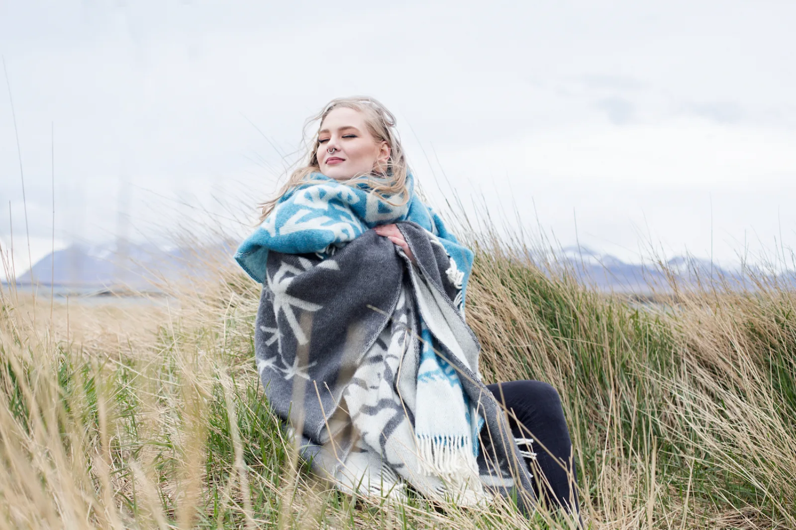

A small family company · Reykjavík
We welcome you to discover connections to the past, and share in the beauty of new Nordic tradition.
Alrún is a small family company. The twelve bindrunes are the studio’s own designs, drawn in Reykjavík and trademarked, produced in .925 sterling silver and, since 2017, woven into Icelandic wool for the home.
The studio has been writing about the work since 2016: the tiny studs they call small but mighty, the shoot exploring the interaction between ancient and contemporary design, the summer a long held dream came true and the range moved beyond jewelry.